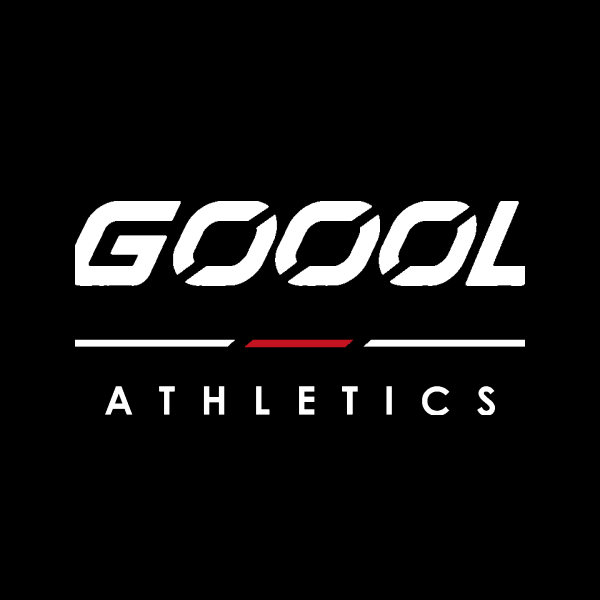
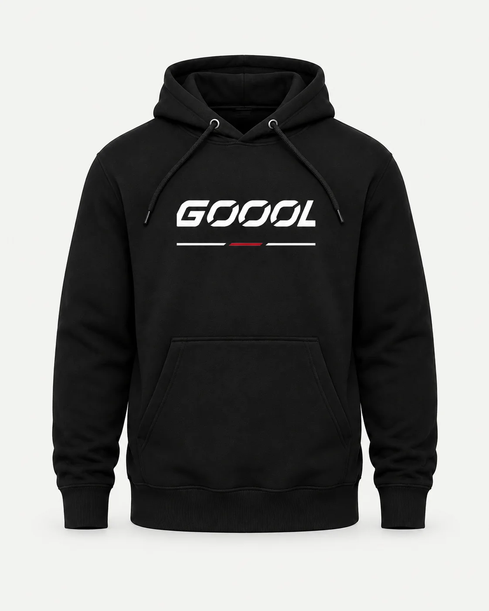
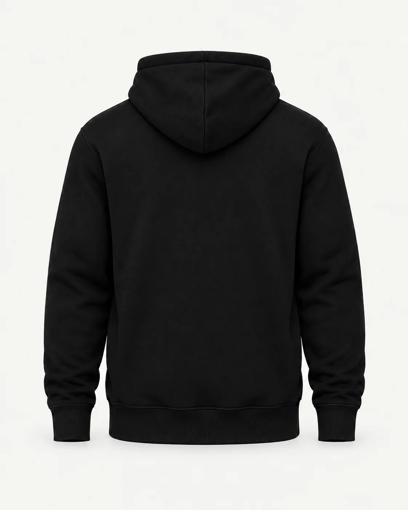

GOOOL / REVISION 2 / GARMENT EXECUTION
GOOOL Core Hoodie
Black
Independent Trading Co. IND4000 · Supplier color candidate: Black · S / M / L / XL / XXL
Prepared design target — supplier proof and physical sample still required. These diagrams establish print placement; they do not certify blank pattern, fit, color, label service or supplier availability. Wearer-left is viewer-right. Collar measurements begin at the bottom seam and end at the visible artwork, not its transparent canvas.
Front
body centerline; 4 in — top of visible artwork below hood/neck seam
Back
Keep this exterior face blank.
| Face | Visible width × height | Anchor offset | Dimension basis |
|---|
| front | 6.750 × 2.343 in
171.45 × 59.52 mm | 4 in
101.60 mm | sample_specification_target |
Method: DTF / transfer; supplier process confirmation required. Use spec.json for exact artwork files, pixel insets, tolerances and source hashes. Confirm each offered size's print area; record any scaling instead of silently changing width.
Brand label — flat art now supplied

Nominal one-inch square. Enlarged preview. Three Os; white/red/white separated underline; ATHLETICS beneath. Full-color service and interior placement require approval on this blank. One-inch woven detail needs artist resolution. The two-inch comparison file is not an automatic size substitution.
Label production requirementsOriginal mockup intent — concept references

Concept reference; verify blank construction, color and print placement.

Concept reference; verify blank construction, color and print placement.
Before a customer order
Complete supplier and per-size verification and physical sample acceptance. Match the actual blank, art, print size, color, label and product photography. Keep sales/fulfillment gates until the recorded checks pass.